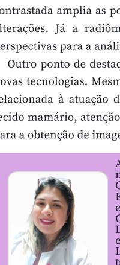

A segunda parte da palestra de Carolina Baione foi dedicada às tecnologias auxiliares, com destaque para o gerenciamento do movimento respiratório e a evolução da Radioterapia Guiada por Imagem: dos filmes portais e sistemas eletrônicos de imagem até os sistemas de aquisição em quilovoltagem e a tomografia computadorizada de feixe cônico. Sistemas avançados de localização e rastreamento, como ExacTrac e CyberKnife, completaram o panorama apresentado.
A palestra abordou a evolução tecnológica da imagem mamária e a crescente incorporação da IA como ferramenta de apoio ao diagnóstico. Durante a apresentação, foram discutidos conceitos de CAD, IA e Deep Learning, com destaque para suas principais aplicações na mamografia: detecção de alterações suspeitas, identificação de padrões, priorização de exames e otimização do fluxo de trabalho.
Também foram apresentados avanços em tomossíntese, mamografia contrastada e radiômica. A tomossíntese permite uma avaliação mais detalhada do tecido mamário, reduzindo a sobreposição de estruturas; a mamografia contrastada amplia as possibilidades de investigação; e a radiômica possibilita a extração de informações quantitativas das imagens.
Outro ponto de destaque foi a valorização dos Técnicos e Tecnólogos em Radiologia diante da incorporação de novas tecnologias: posicionamento adequado, compressão correta, inclusão de todo o tecido mamário e controle de qualidade seguem fundamentais para a obtenção de imagens confiáveis.
